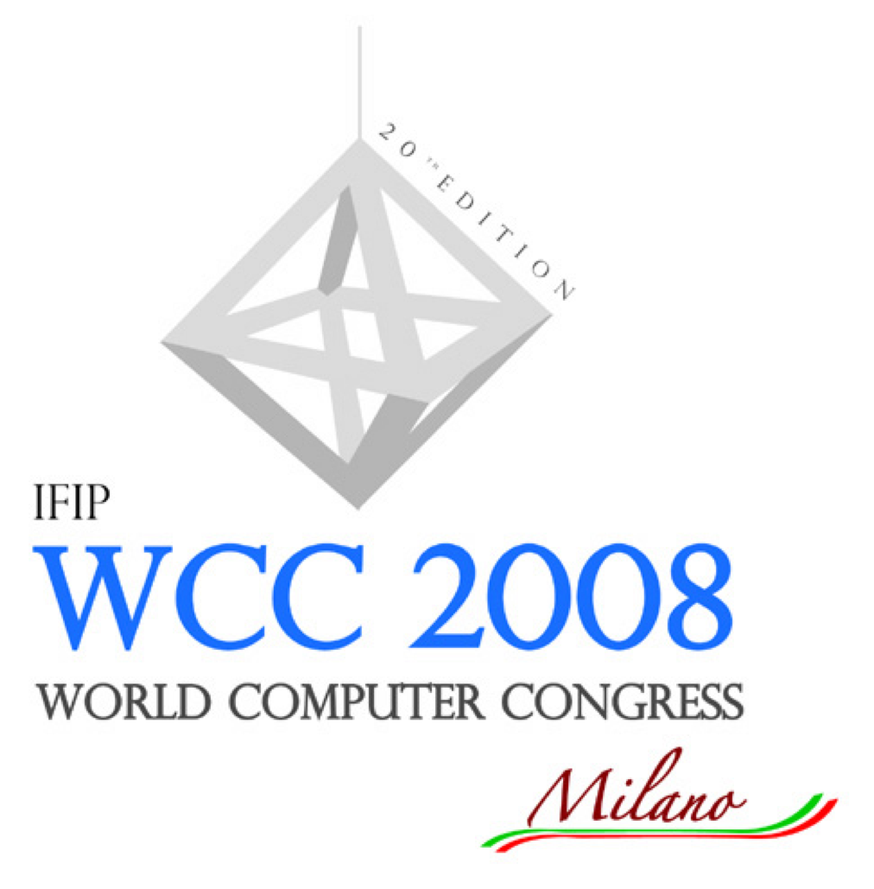

23rd International Information Security Conference (SEC 2008)co-located with IFIP World Computer Congress 2008Milan, Italy - September 8 - 10, 2008 |
 | |
|
|
Author instructionsBelow are the instructions for the final version of your submission. Please read the whole instructions carefully. Submissions that do not conform to the Springer guidelines for the IFIP Series will be returned for corrections and/or alterations.Submission deadline and instructionsYour electronic submission is due on or before April 18, 2008. Your page limit is set by the category your submission has been selected for:
Please send to Stelvio Cimato (cimato@dti.unimi.it):
Copyright formPlease print the copyright form available at Springer-IFIP Series site (http://www.springer.com/series/6102), sign, date, and FAX to +39-02-503.30010 (attn: Stelvio Cimato).Registration to the conferenceAt least one author of each accepted paper must register to ensure that the paper is included in the conference proceedings. This registration must be received by the deadline of April 30, 2008. If the registration is not received by this date, the paper will not be included in the conference proceedings.Please register here: http://www.wcc2008.org/site/registration.php For any questions, please contact the program chairs: sec2008@dti.unimi.it |